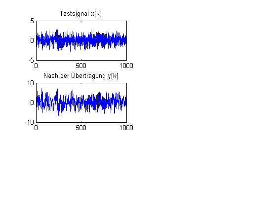

Contents
Wiener-Filter (a_wienerFilter.m)
Ein Übertragungskanal ist durch einen Tiefpass und Rauschen gestört und wird durch ein Wiener-Filter entzerrt (Deconvolution). B. Wir 18.5.2012
clear all; close all;
Testsignale erzeugen
R_p = 0.01; % Rauschleistung N = 1000; x = randn(1,N); r = randn(size(x)); g = [ 1 2 1 ]; y = conv(x,g,'same') + sqrt(R_p)* r; figure(1); subplot(3,2,1); plot(x); title('Testsignal x[k]'); subplot(3,2,3); plot(y); title('Nach der Übertragung y[k]');
(i) Berechnen Sie den theoretischen Amplitudengang des Wiener-Filters.
Formen Sie dazu die Formel im Skript zunächst um, damit keine Division durch 0 erfolgt. Verwenden Sie das Vorwissen, dass das Signal- und das Rauschspektrum einen weißen Frequenzgang haben.
X = ones(1,N); G = abs(fft(g,N)); % Y = X.* G ; % R = ones(1,N)* R_p; % % W_abs = .....................; % % subplot(3,2,5); plot(W_abs); title('Theoretisches Wiener-Filter'); % ylabel('Amplitude'); xlabel('Frequenzzahl \nu'); % %% (ii) Schätzen Sie das Spektren des Signals sowie des Rauschens % % mit dem Periodogramm und bestimmen Sie daraus den Amplitudengang des % % Wiener-Filters. % % % % Zunächst spektrale Schätzung mit |FFT|^2 (d.h Periodogramm) % X2 = abs(fft(x,N)).^2/N; % G = abs(fft(g,N)); % Y2 = .......; % R2 = ........; % % W_abs = ( X2 .* G) ./ ( Y2 + R2); % % subplot(3,2,2); plot(X2); title('Periodogramm ( x )'); % ylabel('Amplitude '); xlabel('Frequenzzahl \nu'); % subplot(3,2,4); plot(Y2); title('Periodogramm ( y )'); % % ylabel('Amplitude / db'); xlabel('Frequenzzahl \nu'); % subplot(3,2,6); plot(W_abs); title('Wiener-Filter aus Periodogramm'); % % % %% (iii) Verwenden Sie ein Adaptives Inverses Filter unter Simulink % % Welchen Amplitudengang hat das Filter nach der Adaption % % % % - Simulink starten % % - Dann unter Simulink "adaptivesInversesFilter"